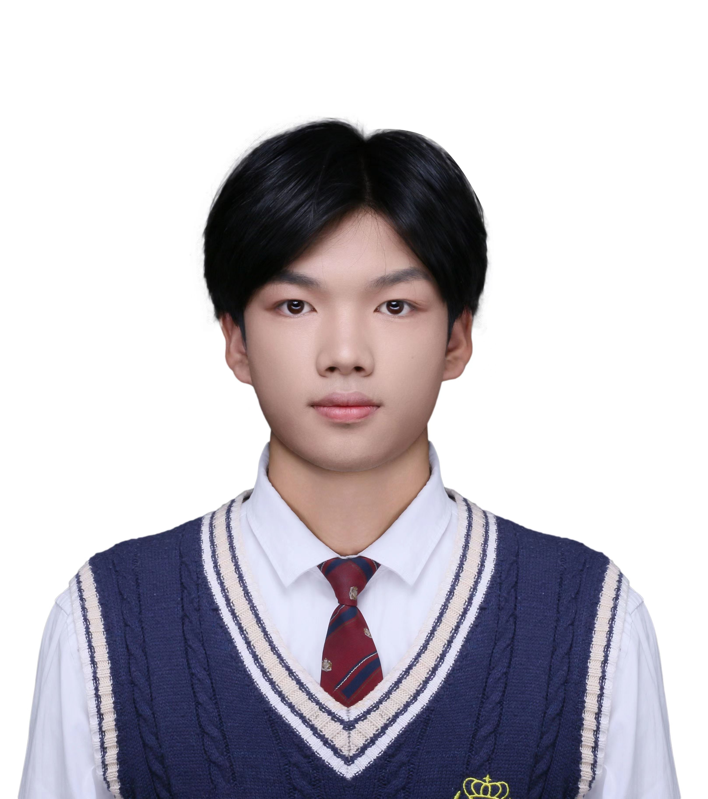

南故笙烟
📋
个人信息
姓名
南故笙烟
出生日期
2005.3.9
星座
双鱼座
⚡
技术兴趣
日常喜欢捣鼓软硬件结合的东西，热衷于把想法变成实物。
🔧 单片机 (MCU)
📟 嵌入式系统
🌐 网络技术
🤖 机器人控制
⚙️ C / C++
📡 IoT 物联网
💻
Keil 项目
基于 STM32 系列 MCU 的嵌入式项目，涵盖外设驱动、传感器、显示、游戏等。
STM32 工程模板
基于 HAL 库的 STM32 开发基础工程模板，集成常用外设驱动初始化框架，作为后续项目的起点。
STM32
HAL库
LED 闪烁 & 流水灯
GPIO 输出入门实验，包含单 LED 闪烁与多 LED 流水灯效果，掌握基本 IO 控制。
GPIO
LED
蜂鸣器驱动
PWM / 高低电平驱动蜂鸣器，实现不同频率的音调输出，学习定时器与 PWM 控制。
PWM
定时器
按键控制 LED
读取 GPIO 按键输入状态控制 LED 开关，涉及按键消抖、电平检测等基础交互逻辑。
GPIO
按键
OLED 显示屏驱动
I2C/SPI 驱动 0.96 寸 OLED 显示屏，实现字符、汉字和简单图形的显示，支持多模式切换。
I2C
OLED
显示
PWM 呼吸灯
利用定时器 PWM 输出控制 LED 渐亮渐灭，实现呼吸灯效果，理解占空比与亮度调节。
PWM
定时器
呼吸灯
温度传感器 + LED 报警
读取温度传感器（DS18B20 / NTC），超阈值时触发 LED 流水灯报警，软硬件联调。
DS18B20
传感器
报警
温度传感器 + OLED 显示
温度传感器采集数据，实时显示在 OLED 屏幕上，结合传感与显示。
传感器
OLED
数据采集
月薪喵 — OLED GIF 播放器
STM32F103C8T6 + 0.96 寸 OLED，播放"月薪喵" GIF 动画，解决 SRAM 溢出与重定义问题，高兼容性实现。
STM32F103
OLED
GIF
月薪喵 — TFT 全彩版
正点原子 Mini STM32 + 2.8 寸 TFT-LCD，全彩 GIF 播放，启用串口解决 LCD 初始化卡死问题。
STM32
TFT-LCD
全彩
贪吃蛇游戏
正点原子 Mini STM32 + 2.8 寸 TFT-LCD，全彩贪吃蛇游戏，使用外部面包板按键控制，移除了红外代码。
STM32
TFT-LCD
游戏
USB 视频播放器
正点原子 Mini STM32 + 2.8 寸 TFT-LCD，USB 虚拟串口传输视频数据，单缓冲优化解决 SRAM 溢出，极速渲染。
STM32
USB
视频
📍
所在城市
陕西 · 西安